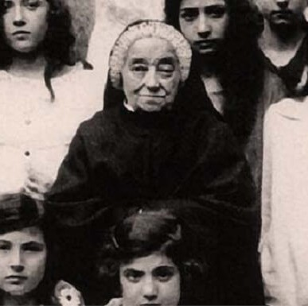
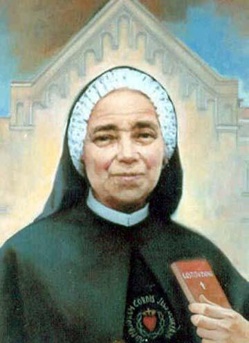
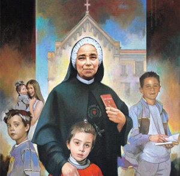

"Dona Julieta" — Apóstola da Catequese
"Enquanto tiver vida, continuarei a ensinar o catecismo. E então, estejam certos, morrerei feliz ensinando o catecismo."

Giulia Salzano nasceu em 13 de outubro de 1846 em Santa Maria Capua Vetere, na província de Caserta, no então Reino das Duas Sicílias — a mesma região de origem da família que, gerações depois, daria ao mundo São Carlo Acutis pela linha materna. Seu pai, Diego Salzano, era capitão dos lanceiros do rei Fernando II de Nápoles — um militar de carreira, respeitado e de família distinta. Sua mãe, Adelaide Valentino, era mulher de fé. A família tinha, pela linha materna de Adelaide, parentesco com Santo Afonso Maria de Ligório, Doutor da Igreja e patrono dos moralistas — o mesmo parentesco que une Giulia à linhagem dos Acutis.
Quando Giulia tinha apenas quatro anos, Diego Salzano morreu. A perda foi não apenas emocional, mas imediatamente material: a mãe, sem meios de sustentar os filhos sozinha, tomou a decisão dolorosa de confiar Giulia aos cuidados das Irmãs da Caridade no Orfanato Real de São Nicolau La Strada, em Caserta. Ali Giulia viveria até os quinze anos — onze anos de infância e adolescência numa instituição religiosa, formada pelas freiras e pela rotina de oração, trabalho e estudo que aquele ambiente impunha.
A experiência no orfanato, que poderia ter gerado amargura, moldou o caráter de Giulia de forma decisiva. Ali aprendeu a amar as crianças sem família, a valorizar a educação como instrumento de dignidade e a descobrir na fé não um consolação abstrata, mas uma presença concreta que sustenta a vida. As Irmãs da Caridade — seguindo o espírito de São Vicente de Paulo — tornaram-se seu primeiro modelo de vida consagrada ao serviço. Giulia não as esqueceria jamais.
Saindo do orfanato aos quinze anos, Giulia formou-se professora — o caminho mais acessível para uma mulher sem recursos na Itália do século XIX que desejasse ter uma vida profissional independente e ao mesmo tempo útil. Em 1865, com dezenove anos, recebeu a nomeação para lecionar na Escola Municipal de Casoria, cidade da periferia de Nápoles, para onde se transferiu com a mãe e os irmãos.
Casoria era uma cidade humilde, com grande número de famílias pobres e crianças com acesso limitado à instrução religiosa. Giulia rapidamente percebeu que seu papel como professora ultrapassava o currículo formal: suas alunas chegavam à escola sem nenhuma formação cristã básica, sem preparação para os sacramentos, sem conhecimento do catecismo. Começou então a dedicar tempo extra — fora do horário escolar — para ensinar o catecismo às crianças, prepará-las para a Primeira Comunhão e visitar as famílias dos bairros mais pobres.
Com o tempo, o catecismo foi se tornando o centro da sua vida. "Dona Julieta", como os moradores de Casoria a chamavam com afeto, não apenas ensinava doutrinas: ela ensinava a rezar, a confessar, a comungar, a perdoar. Percebeu algo que muitos catequistas do seu tempo não haviam sistematizado: a catequese eficaz exige método pedagógico aliado ao testemunho de vida. Não basta saber a doutrina; é preciso ensiná-la de forma que toque o coração — com exemplos, com paciência, com afeto, e acima de tudo com a coerência de quem vive o que proclama.
Paralelamente, cultivava uma vida espiritual intensa: devoção profunda à Virgem Maria, ao Sagrado Coração de Jesus e à Eucaristia. Tornou-se amiga e colaboradora de outra figura que seria beatificada — Caterina Volpicelli —, com quem partilhava o ideal apostólico de transformar a sociedade napolitana pela difusão da fé. A cidade de Casoria começou a mudar, lentamente, pela presença discreta e constante de "Dona Julieta".
Por décadas, Giulia trabalhou como catequista leiga, sem nenhuma estrutura institucional além da sua própria perseverança. Mas com o passar dos anos, percebeu que a missão era grande demais para uma só pessoa — e que, para durar além de sua vida, precisava de uma forma organizada de continuidade. Em 1905, aos cinquenta e oito anos, fundou a Congregação das Irmãs Catequistas do Sagrado Coração de Jesus — uma família religiosa dedicada exclusivamente à catequese como missão central e primária, não como apostolado secundário ao lado de hospitais ou escolas, mas como razão de ser em si mesma.
A fundação foi tardia para os padrões hagiográficos — Giulia tinha quase sessenta anos quando vestiu o hábito e se consagrou definitivamente. Mas essa demora foi também uma escola: as décadas como professora leiga deram-lhe uma experiência pedagógica concreta que poucas fundadoras tiveram ao criar seus institutos. Ela sabia exatamente o que queria formar e como fazê-lo, porque havia testado seus métodos por quarenta anos antes de institucionalizá-los.
Um beato, Ludovico de Casoria, havia lhe dito certa vez, quase profeticamente: "Cuida de não cair na tentação de abandonar as crianças da nossa querida Casoria, porque a vontade de Deus é que vivas e morras entre elas." E assim foi — Giulia nunca deixou Casoria. Viveu, trabalhou e morreu ali, na mesma cidade onde chegara aos dezenove anos como professora.
Giulia continuou a ensinar o catecismo praticamente até os últimos dias de sua vida. Repetia com frequência a frase que se tornaria sua marca espiritual: "Enquanto tiver vida, continuarei a ensinar o catecismo. E então, estejam certos, morrerei feliz ensinando o catecismo." Não era uma frase retórica — era o programa de uma vida inteira resumido numa única convicção.
Faleceu em 17 de maio de 1929, em Casoria, aos oitenta e dois anos de idade, com fama de santidade entre todos que a conheciam. Sua congregação já se havia expandido por várias cidades da Itália; depois de sua morte, continuaria a crescer pela Europa, pelo Brasil, pelo Canadá, pelas Filipinas, pelo Peru e pela Índia. Sua causa de canonização foi aberta em 4 de abril de 1974, por Paulo VI. João Paulo II a declarou Venerável em 23 de abril de 2002 e a beatificou em 27 de abril de 2003. Bento XVI a canonizou em 17 de outubro de 2010.
A mãe de Carlo Acutis, Antonia Salzano Acutis, confirmou em entrevistas que Giulia Salzano é parente de sua família pela linha materna — o mesmo sobrenome Salzano que liga as duas figuras é o traço visível de uma genealogia espiritual ainda mais profunda. Antonia disse: "Temos raízes santas e raízes matemáticas, e o resultado foi Carlo." A presença de dois santos canonizados na árvore genealógica materna — Giulia Salzano e Santo Afonso de Ligório — não passou despercebida pela Igreja nem pela própria família na época da canonização de Carlo em 2025.
Há uma ironia tocante nessa convergência: Giulia passou a vida ensinando crianças sobre a Eucaristia; Carlo passou a curta vida documentando milagres eucarísticos pelo mundo inteiro. Separados por quase um século, os dois encontraram no mesmo mistério eucarístico o centro de suas vidas — e ambos chegaram à mesma conclusão que Giulia expressava com a didática da sala de aula e Carlo com os computadores e as exposições digitais: que a Eucaristia é o coração da fé cristã, e que ensiná-la ao próximo é a missão mais urgente de todo cristão.
De órfã no orfanato a fundadora de uma congregação em quatro continentes
13 Out 1846
Nasce em Santa Maria Capua Vetere, Caserta, filha de Diego Salzano, capitão dos lanceiros do rei Fernando II de Nápoles, e de Adelaide Valentino.
c. 1850 · 4 anos
Diego Salzano morre. Giulia é confiada pelas Irmãs da Caridade ao Orfanato Real de São Nicolau La Strada, onde permanecerá até os quinze anos.
1865 · 19 anos
Nomeada professora na Escola Municipal de Casoria. Muda-se com a família. Inicia sua missão catequética paralela ao trabalho escolar.
Décadas seguintes
Por quarenta anos, ensina catecismo a crianças, jovens e adultos, visita doentes e pobres, e forma uma geração inteira de católicos em Casoria.
1905 · 58 anos
Funda as Irmãs Catequistas do Sagrado Coração de Jesus, veste o hábito e se consagra definitivamente à vida religiosa.
17 Mai 1929
Falece em Casoria, a mesma cidade onde chegara sessenta e quatro anos antes, com fama de santidade entre todos que a conheciam.
27 Abr 2003
Beatificada pelo Papa João Paulo II na Praça São Pedro, junto com outras três religiosas fundadoras.
17 Out 2010
Canonizada pelo Papa Bento XVI na Praça São Pedro. Sua congregação já atuava em quatro continentes.
Os prodígios reconhecidos pela Igreja para sua beatificação e canonização
01
Itália
Um caso de cura considerada medicamente inexplicável foi investigado e aprovado pela Congregação para as Causas dos Santos, abrindo caminho para a beatificação por João Paulo II em 2003. Os detalhes do beneficiário permanecem sob sigilo pontifício, conforme prática habitual da Santa Sé para proteção da privacidade.
Aprovado em 2003 · para a Beatificação02
Itália · 2007–2009
O processo do segundo milagre foi aberto em 21 de junho de 2007 e concluído em 21 de dezembro de 2007, com os documentos enviados a Roma. O conselho médico votou a favor em 13 de novembro de 2008, os teólogos em 15 de setembro de 2009 e o Consistório em 1 de dezembro de 2009. Bento XVI aprovou o milagre em 19 de dezembro de 2009, abrindo caminho para a canonização em outubro de 2010.
Aprovado em 2009 · para a CanonizaçãoImagens da vida e memória de Santa Giulia Salzano


Imagens utilizadas sob licença de seus respectivos autores. Créditos completos disponíveis aqui.
Documentação utilizada para a elaboração deste perfil
Senhor Jesus, Tu que mandaste ir e ensinar todas as nações, concede-nos, pela intercessão de Santa Giulia Salzano, a graça de transmitir a fé com a mesma paciência, o mesmo afeto e a mesma convicção com que ela a viveu e ensinou por mais de seis décadas.
Ela que ficou órfã aos quatro anos e encontrou nas Irmãs da Caridade seu primeiro modelo de fé; que se tornou professora não por ambição mas por vocação; que descobriu no catecismo não uma obrigação curricular mas o coração de toda a missão — ensina-nos a nunca subestimar o poder de uma palavra de fé dita com autenticidade.
Intercede especialmente por todos os catequistas, professores de religião e pais que ensinam a fé em casa — pelos que se cansam, pelos que duvidam se estão fazendo diferença, pelos que continuam mesmo sem ver os frutos imediatos.
E que possamos aprender com ela esta certeza: que nenhuma hora dedicada a ensinar sobre Deus é uma hora perdida. Amém.
· Para uso privado · Parente de São Carlo Acutis · Festa: 17 de maio ·